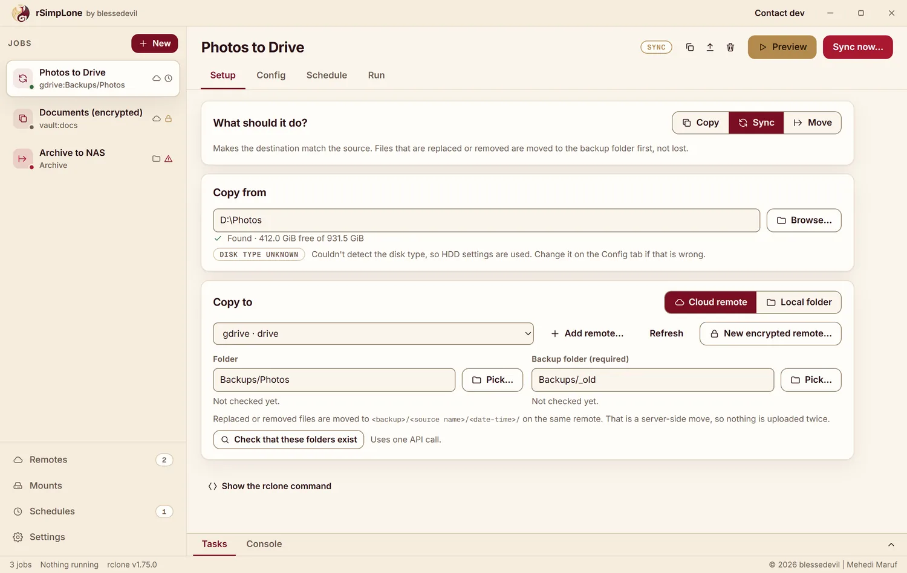
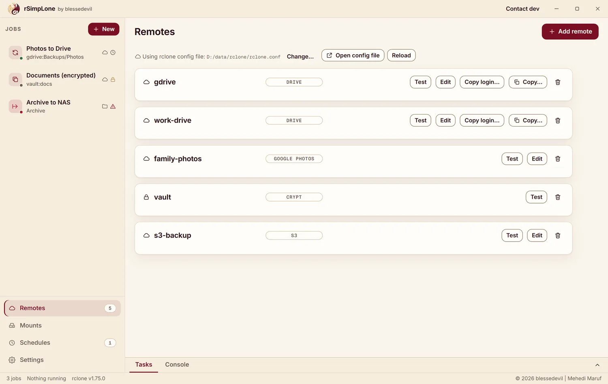
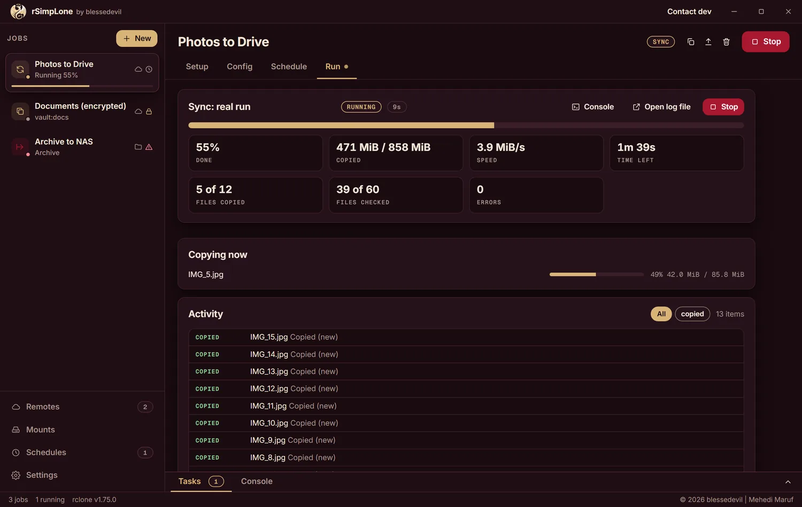

Copy, sync and move your files to Google Drive, OneDrive, Dropbox, S3, SFTP and more, from one friendly window. Preview first, then run. Free and open source.
Windows, Linux and macOS. Needs rclone; the app can install it for you.

rclone is powerful, and powerful tools bite. rSimpLone keeps the power and puts guard rails around it.
Every job has a Preview that shows what would change without touching a file. Move needs a fresh preview and a typed confirmation, because it deletes the source.
Add Google Drive, OneDrive, S3 or SFTP connections with rclone's own guided sign-in. Run jobs, watch them live, schedule them, mount drives.
AGPL-3.0 licensed. Your logins stay in your own rclone config on your own computer. Nothing is sent anywhere.


Latest release on GitHub.
| For | File | |
|---|---|---|
| Windows installer | setup, with uninstaller, no admin needed | Get it |
| Windows single file | portable | Get it |
| Linux single file | portable, about 232 MB (bundles its web view) | Get it |
| macOS Apple Silicon | zipped app, experimental | Get it |
The files are not code-signed. Windows SmartScreen or macOS Gatekeeper may warn you. Check the file's SHA-256 against SHA256SUMS.txt first:
Get-FileHash .\rSimpLone-*-windows-x64-setup.exe # Windows (PowerShell) sha256sum rSimpLone-*-linux-x64-portable # Linux shasum -a 256 rSimpLone-*-macos-arm64-portable.zip # macOS
macOS: right-click the app and choose Open (or run xattr -dr com.apple.quarantine rSimpLone.app). macOS support is experimental. Windows needs WebView2, which current Windows 10 and 11 already have.
rclone is not included. If it is missing, rSimpLone shows an Install rclone button that uses your own package manager (winget, Scoop or Homebrew) after showing you the exact command. Or install it yourself from rclone.org.
I could have built one. The window is plain HTML, so a browser version is a small step.
I chose not to host it, on purpose. rSimpLone runs rclone on the computer it lives on, and rclone can read, overwrite and delete files. A public web version would either let strangers loose on the server's files, or mean I keep your Google Drive and server logins on my side so it can act for you. I don't want to hold your keys, and I don't want you to have to trust me with them.
So your logins stay in your own rclone config, on your own computer. The app has one optional network call of its own, an update check that is off until you turn it on. If you want a browser view for your own NAS or server, a self-hosted mode that only you can reach is possible later.
A free command-line program that copies files to and from almost any cloud or server. rSimpLone is a window on top of it, so you don't have to memorise commands.
Preview shows what would change before you run anything. Sync keeps replaced files in a backup folder. Move only runs after a fresh preview and a typed confirmation. It is free software, so you can read exactly what it does.
Jobs and settings live in a folder on your computer. Remote logins live in your rclone config file, which you can choose in Settings. Passwords are never shown or written to logs.
Use the Windows uninstaller or delete the portable file. The uninstaller asks before deleting your jobs and settings, and by default it keeps them.
Only if you say yes. It then asks GitHub once a day for the newest release and links to it. It never downloads or installs anything by itself.